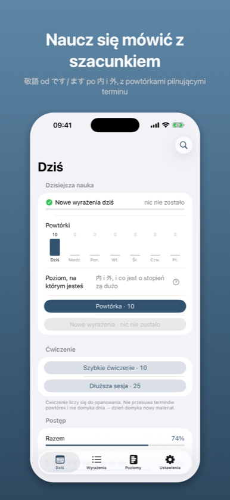
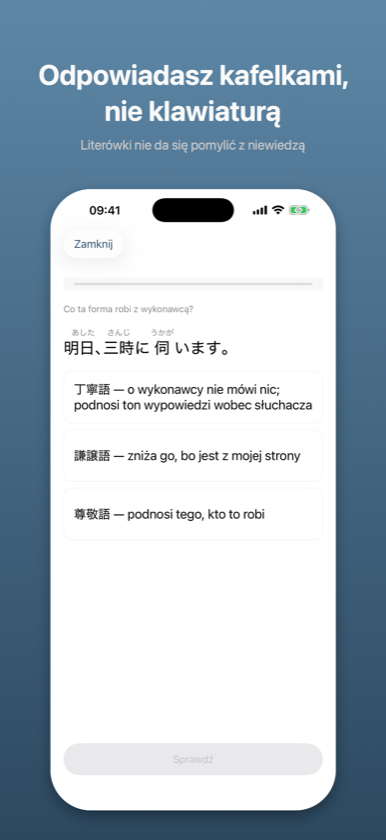
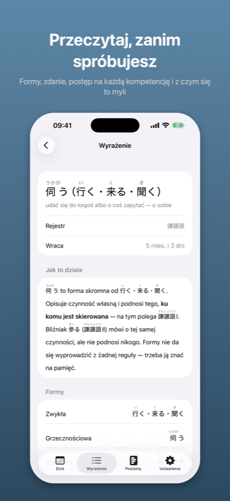

Keigo: Grzeczność japońska敬語
Japoński formalny do pracy
Japoński formalny do pracy
Wkrótce w App Store
Aplikacja czeka na recenzję Apple. Strona opisuje wersję złożoną do sklepu.
Znać formę to nie to samo co wiedzieć, wobec kogo jej użyć. Za dużo keigo jest błędem dokładnie tak samo jak za mało – i to jest ta połowa, której nie uczy nikt.



Japoński rejestr grzecznościowy to nie lista form do zapamiętania, tylko decyzja: wobec kogo.
Można wiedzieć, że 伺う to forma skromna od 行く, i mimo to postawić ją wobec kolegi o rok starszego. Można umieć お〜になる i użyć go, mówiąc o własnym szefie do klienta. Różnica nie siedzi w formie – siedzi w tym, kto do kogo mówi. Keigo pyta właśnie o to.
Rejestr – wobec kogo ta forma jest w sam raz.
Kierunek – czyja to czynność: twoja czy drugiej strony.
Produkcja – złożenie formy z członów.
Przesada – rozpoznanie, że keigo jest o stopień za dużo.
Można bezbłędnie wybierać rejestr uniżony i konsekwentnie uniżać niewłaściwą osobę. Aplikacja, która uśrednia te cztery liczby w jedną, nie ma jak tego pokazać. Ta pokazuje.
二重敬語 i バイト敬語 – formy, które brzmią uprzejmie i są niepoprawne. Słyszy się je codziennie i prawie nikt ich nie prostuje. To jest osobny typ pytania i osobna mierzona umiejętność.
Pomyłka ma kierunek. Stawianie 伺う zamiast いらっしゃる to inna wada niż odwrotnie, bo pierwsza zniża drugą stronę, a druga podnosi ciebie. Aplikacja mierzy to osobno i mówi wprost, którą stronę mylisz.
Formy składa się z członów. Nie ma pola tekstowego, więc literówki nie da się pomylić z niewiedzą, a japońska klawiatura nie jest do niczego potrzebna.
Leksykon wraca po drabinie odstępów – od kilku godzin do pół roku. Wzorce i reguły nie mają terminów i to jest rozstrzygnięcie, nie brak: お〜になる ma wychodzić bez namysłu, a 内/外 to decyzja, nie fakt, który blaknie. Widzisz jeden ekran „Dziś”, jeden cel dzienny i jedną liczbę; różnica siedzi w doborze pytań.
Materiał jedzie w aplikacji. Postęp zostaje na urządzeniu i nie idzie nigdzie. Nie ma logowania, nie ma śledzenia, nie ma reklam.
Poziomy 1 i 2 w całości – です/ます i wszystkie dwadzieścia form nieregularnych. Jednorazowy zakup otwiera poziomy 3–5: wzorce produktywne, przysługi, 内/外 i przesadę. Bez abonamentu.
Keigo jest siódmą aplikacją tej samej rodziny. Gramatykę wykłada Kaname, odmianę Katsuyokei, partykuły Joshi, liczniki Kazoekata, czytanie Bunmyaku, mowę potoczną Kuzushi. Każda z nich pokazuje twój postęp w pozostałych – bez konta i bez wysyłania czegokolwiek.
Podział na kategorie i rozstrzygnięcia sporne idą za 文化庁「敬語の指針」(2007). Tam, gdzie poradniki biznesowe się nie zgadzają, aplikacja mówi, czyją stronę bierze.
Powyższy opis jest tym samym tekstem, który stoi na karcie aplikacji w App Store – pochodzi z tego samego pliku.